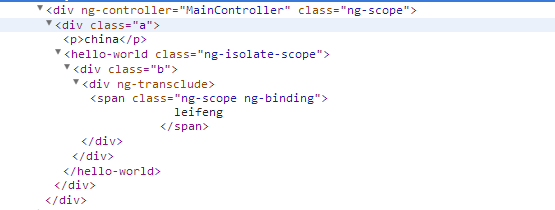
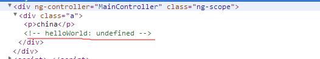
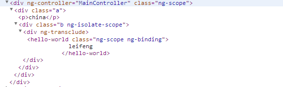

其中return返回的对象包含很多参数
| 属性 | 含义 |
| restrict | 申明标识符在模板中作为元素,属性,注释和组合来使用 |
| priority | 设置模板中相对与其他标识符的执行顺序 |
| Template | 指定一个字符串式的内嵌模板 |
| TemplateUrl | 指定URL加载模板.注意:已经指定内嵌的模板字符串则不会使用 |
| Replace | 如果为真则替换当前元素,如果为假或未指定则拼接当前元素 |
| Transclude | 移动一个标识符的原始字节并连接到一个新模板的位置 |
| Scope | 为这个表示符创建一个新的作用域而不是继承父作用域 |
| Controller | 创建一个控制器通过标识符公开通信API |
| Require | 当前标识符需要一个标识符提供正确的函数功能 |
| Link | 通过代码修改目标DOM元素的实例,添加事件监听,建立数据绑定 |
| Compile | 通过标识符拷贝编程修改DOM模板 |
（字符串）可选参数，指明指令在DOM里面以什么形式被声明
取值有：E(元素),A(属性),C(类),M(注释)，其中默认值为A
(数字)，可选参数，指明指令的优先级，若在单个DOM上有多个指令，则优先级高的先执行
ng-repeat的优先级为1000
ng-init的优先级为450
（布尔型），可选参数，可以被设置为true或false，若设置为true，则优先级低于此指令的其他指令则无效，不会被调用(优先级相同的还是会执行)
（字符串或者函数）可选参数
其中Element是指使用此指令的元素
Attrs则实例的属性，它是一个由元素上所有的属性组成的集合（对象）
原始html代码
渲染后的html
（字符串或者函数），可选参数
在本地开发时候，需要运行一个服务器，不然使用templateUrl会报错 Cross Origin Request Script（CORS）错误
由于加载html模板是通过异步加载的，若加载大量的模板会拖慢网站的速度
这里有个技巧，就是先缓存模板
可以再你的index页面加载好的，将下列代码作为你页面的一部分包含在里面
这里的id属性就是被设置在templateUrl上用的
另一种办法缓存
（布尔值），默认值为false，设置为true时候
原始代码
编译后的代码
当模板为纯文本（即template:"wo shi wen ben"）的时候，渲染之后的html代码默认的为文本用span包含
可选参数，（布尔值或者对象）默认值为false
默认值false
表示继承父作用域true
表示继承父作用域，并创建自己的作用域（子作用域）{}
表示创建一个全新的隔离作用域ng-controller（内置指令）可以从父作用域中继承并且创建一个新的子作用域
若去掉$scope.aaa = 'child'
parentNode: fa childNode: faclass为one那个div获得了指令ng-controller=’myController‘所创建的新的作用域
class为two那个div获得了指令ng-controller=’myController2‘所创建的新的作用域
当为false时候
儿子继承父亲的值，改变父亲的值，儿子的值也随之变化，反之亦如此
当为true时候
儿子继承父亲的值，改变父亲的值，儿子的值随之变化，但是改变儿子的值，父亲的值不变
当为{}时候
没有继承父亲的值，所以儿子的值为空，改变任何一方的值均不能影响另一方的值
当想要创建一个可重用的组件时隔离作用域是一个很好的选择
通过隔离作用域我们确保指令是‘独立’的
并可以轻松地插入到任何HTML app中，并且这种做法防止了父作用域被污染
将scope设置为{}时候，再次运行上面的代码可以发现页面并不能成功完整显示
原因在于，这里将scope设置为{}，产生了隔离作用域
在template模板中{{color}}变成了依赖于自己的作用域，而不是依赖于父作用域
因此我们需要一些办法来让隔离作用域能读取父作用域的属性
这种办法只能单向，通过在运行的指令的那个html标签上设置color-attr属性，并且采用{{}}绑定某个模型值
可以再这里直接绑定字符串的颜色值,如：color-attr=“red”
可以看到表达式{{color}}被赋值给了color-attr
当表达式的值发生变化时，属性color-attr也会发生变化，所以也改变了隔离作用域中的属性color
这里需要注意的是，我们要直接在指令运行的那个元素上设置属性时候，是直接将 实际的作用域模型 赋值给该属性（这里就是color）
一个双向绑定被建立了，改变任何一个input都会改变另一个值
（布尔值或者字符‘element’），默认值为false
这个配置选项可以让我们提取包含在指令那个元素里面的内容，再将它放置在指令模板的特定位置
当你开启transclude后，你就可以使用ng-transclude来指明了应该在什么地方放置transcluded内容
china leifeng
另外当开启transclude，会创建一个新的transclude空间，并且继承了父作用域
即使Scope设置为隔离作用域上面代码中的{{name}}是依赖于父作用域的，仍然能被渲染出来，就说明了这点
发现文本“你看不见我”消失了，这是因为被transclude内容替换掉了
这里的transclude内容就是{{name}}
区别在于嵌入的内容
{{name}}
此时嵌入的内容为整个元素
将上面代码transclude：true换成transclude：true后，再运行，结果并不是和你想的一样
查看生成的html代码
指令绑定的元素被转换为了一个HTML注释
解决方案是加上replace: true
查看HTML代码
在一个指令的模板template上只能申明一个ng-transclude
可以使用$transclude
可以使用compile函数，里面有个transcludeFn参数
使用link链接函数
可以是一个字符串或者函数
若是为字符串，则将字符串当做是控制器的名字
来查找注册在应用中的控制器的构造函数
也可以直接在指令内部的定义为匿名函数
同样我们可以再这里注入任何服务（$log,$timeout等等）
除非是用来定义一些可复用的行为，一般不推荐在这使用
指令的控制器和link函数（后面会讲）可以进行互换
区别在于，控制器主要是用来提供可在指令间复用的行为但link链接函数只能在当前内部指令中定义行为，且无法再指令间复用$transclude();在这里，它可以接收两个参数，第一个是$scope，作用域，第二个是带有参数clone的回调函数
clone实际上就是嵌入的内容（经过jquery包装），可以在它上做很多DOM操作
简单使用$transclude()，那么默认的其作用域就是$transclude生成的作用域
使用$transclude($scope,function(clone){}),那么作用域就是directive的作用域了
可以使用$scope.$parent
这个选项的作用是可以设置控制器的别名
一般以前经常用这样方式来写代码
后来angularjs1.2给我们带来新语法糖
也可以再指令里面也这样写
字符串代表另一个指令的名字，它将会作为link函数的第四个参数
编写两个指令，两个指令中的link链接函数中存在有很多重合的方法
可以将这些重复的方法写在第三个指令的controller中
然后在这两个指令中，require这个拥有controller字段的的指令
最后通过link链接函数的第四个参数就可以引用这些重合的方法
指令innerDirective和指令innerDirective2复用了定义在指令outerDirective的controller中的方法
指令中的controller是用来让不同指令间通信用的
没有前缀
指令会在自身提供的控制器中进行查找，如果找不到任何控制器，则会抛出一个error?
如果在当前的指令没有找到所需的控制器，则会将null传给link连接函数的第四个参数^
如果在当前的指令没有找到所需的控制器，则会查找父元素的控制器^?
组合使用首先加载angularjs库，查找到ng-app指令，从而找到应用的边界
根据ng-app划定的作用域来调用$compile服务进行编译
angularjs会遍历整个HTML文档，并根据js中指令的定义来处理在页面上声明的各个指令
按照指令的优先级(priority)排列，根据指令中的配置参数(template，place，transclude等)转换DOM
然后就开始按顺序执行各指令的compile函数（如果指令上有定义compile函数）对模板自身进行转换
注意:
此处的compile函数是我们指令中配置的，跟上面说的$compile服务不一样
每个compile函数执行完后都会返回一个link函数，所有的link函数会合成一个大的link函数
然后这个大的link函数就会被执行，主要做数据绑定，通过在DOM上注册监听器来动态修改scope中的数据
或者是使用$watchs监听 scope中的变量来修改DOM，从而建立双向绑定等等
若我们的指令中没有配置compile函数，那我们配置的link函数就会运行
她做的事情大致跟上面complie返回之后所有的link函数合成的的大的link函数差不多
注意:
所以：在指令中compile与link选项是互斥的，如果同时设置了这两个选项
那么就会把compile所返回的函数当做是链接函数，而link选项本身就会被忽略掉
compile选项可以返回一个对象或者函数
可以在指令和实时数据被放到DOM中之前进行DOM操作
可以在这里进行添加或者删除节点的DOM的操作
注意:
编译函数是负责对模板的DOM进行转换，并且仅仅只会运行一次
大部分情况只要编写link函数就可以了
preLink函数会在编译阶段之后，指令链接到子元素之前执行
postLink会在指令链接到子元素之后执行
为了不破坏绑定过程，如果你需要修改DOM结构，你应该在postLink函数中来做这件事
链接函数负责将作用域和DOM进行链接
若指令中定义有require选项，则link函数会有第四个参数
代表控制器或者所依赖的指令的控制器
使用require：‘ngModel’ 这个选项来增强对表单的操作
link: function(scope, iElem, isAttr, ngmodel) {
// 其与逻辑代码
}
在控制台输出ngmodel这个参数看看
$viewValue为视图值，即显示在视图（页面）的实际值
就是上面例子中input输入框的值$modelValue为模型值，即赋给ng-model的值（与控制器绑定的值）
两者不一定相等，因为$viewValue同步到$modelValue要经过一系列的操作（经过三个管道）
$parsers为一个执行它里面每一个元素（每一个元素都是一个函数）的数组
用来做验证和转换值的过程ngModel从DOM读取的值会被传入到其中的函数
会依次执行每一个函数，把每一个函数执行的结果传个下一个函数
最后一个函数执行的值将会传到model中
可以将函数push进去，那样它就会执行
是一个执行它里面每一个元素（每一个元素都是一个函数）的数组
用来对值进行格式化和转换，以便在绑定了这个值的控件中显示
当数据的模型值发生变化的时候，里面的函数会被一一执行
可以将函数push进去，让它执行
$viewChangeListeners的值也是一个由函数组成的数组
当视图的值发生变化的时候里面的函数会被一一调用
实现跟$watch类似的功能
$render函数负责将模型值同步到视图
如果模型值被改变,需要同步视图的值
$setViewValue用于设置视图值
上面的例子就是将input的value值赋值给$viewValue$error 一个包含所有error的对象
$setPristine 设置为原始状态，会添加ng-pristine的class类名，移除ng-dirty的class类名
ng-model 指令根据表单域的状态添加/移除以下类
函数，接受两个参数
在控制台中打印出来ngmodel.$setValidity
执行了ngmodel.$setValidity会影响到$invalid和$valid的值
$error[validationErrorKey] = !isValid
$error对象中的错误标志validationErrorKey为我们设置的布朗值isValid的相反值
用法就是ngmodel.$setValidity('flag',布朗值)
可以在页面上用formname.inputname.$error.flag
function(validationErrorKey, isValid) {
// Purposeful use of ! here to cast isValid to boolean in case it is undefined
// jshint -W018
if ($error[validationErrorKey] === !isValid) retu…
empty!
Object {empty: true}
其中ngmodel这个对象中的$modelValue,$viewValue,$$lastCommittedViewValue中的参数无法直接获取。。。
暂时不明
当需要判断input的value值是否为空的时候,可以使用这个方法
其实可以就当它是个判断是否为空的方法
传入一个参数,判断这个参数是否为空,你传入任何值都可以也可以自己在指令里重写这个方法，来定义我们自己需要的“是否为空”的概念
$pristine 如果用户还没有进行过交互,值是true
$drity 如果用户已经进行过交互，值是true
$valid 如果没有错误，值是true
$invalid 如果有错误，值是true
| 属性 | 描述 |
| $dirty | 表单有填写记录 |
| $valid | 字段内容合法 |
| $invalid | 字段内容是非法的 |
| $pristine | 表单没有填写记录 |